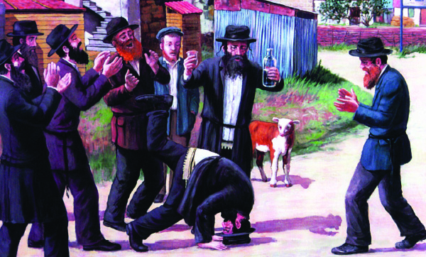

Rejoicing in Anticipation of the Ultimate Joy
“I cannot make you into a Chassid; only Moshiach will warm the sea of ice!” * A compilation of stories about Simcha and Geula. Going from Adar, the month of joy, into Nissan, the month when we experience Geula.

“AND THERE I SAW GREAT JOY”
In the famous letter to his brother-in-law, the Baal Shem Tov wrote:
“… I rose up level after level until I entered the chamber of Moshiach where Moshiach learns Torah with all the Tanaim and tzaddikim and also with the Seven Shepherds. And there I saw exceedingly great joy and I did not know what was the cause. I was sure that this joy was, G-d forbid, over my passing from this world. They informed me afterward that I had not yet died, for they had pleasure up above when I perform unifications down below through their holy teachings, but what the essence of this joy was, I do not know till this day.
“I asked Moshiach when he is coming and he said, ‘This is how you will know: when your teachings spread throughout the world and your wellsprings spread outward, what I taught you and you apprehended, and they too will be able to do yichudim (unifications) and aliyos (elevations) like you and then all the klipos will be destroyed and it will be an auspicious time and one of salvation.’”
(Kesser Shem Tov; Ben Poras Yosef, Rishfei Eish HaShaleim)
THAT IS HOW THEY WILL DANCE WHEN MOSHIACH COMES
On one of the days of sheva brachos following the wedding of the Rebbe Rashab, a seudas mitzva took place in the backyard of his father’s home.
The crowd was large and the Rebbe [Maharash] was in elevated spirits. His face shone with happiness and it looked as though the Sh’china rested upon his holy face.
The elevated spirit of the Chassidim is hard to describe. With the conclusion of the maamer Chassidus, which was on the words “Ki al kol kavod chuppa,” the Rebbe danced and then went up the steps of the garden to the porch that was adjacent to his room, and from there he watched the Chassidim who danced in dozens of circles in the yard.
R’ Zalman Aharon, the Rebbe’s son, and R’ Moshe Aryeh Ginsberg his son-in-law, said afterward that the Rebbe said: Look, my sons, how the Chassidim are rejoicing in a simcha shel mitzva; that is how the Jews will dance in the streets when Moshiach comes.
“A CHASSID IS A BALL OF FIERY JOY”
The Chassid, R’ Zalman Yitzchok of Kalisk, learned in his youth by R’ Dovid Leib of Beshenkowitz who was known as a genius who studied Torah with tremendous diligence.
R’ Zalman Yitzchok later became one of the ardent Chassidim of the Alter Rebbe and delved into the study of Chassidus as well.
He once met his teacher, R’ Dovid Leib, and told him about Chassidus, particularly about the approach of Chabad which enables one to understand p’nimius ha’Torah. R’ Dovid Leib asked his student to make him into a Chassid. R’ Zalman Yitzchok replied, “You cannot become a Chassid because a Chassid is a ball of fiery joy and you were educated and raised to cold mara sh’chora (gloominess).
R’ Dovid Leib did not give up. He traveled to the Alter Rebbe in Liadi and spoke to him in learning. He saw the Alter Rebbe’s brilliance, which gave him great pleasure. R’ Dovid Leib was moved and asked the Rebbe to make him into a Chassid. The Alter Rebbe said, “I cannot make you into a Chassid; only Moshiach will warm the sea of ice!”
(Seifer HaSichos 5703)
THE KING’S TEST
Regarding the question how we can rejoice in such a bitter galus where the hardships, tzaros, decrees, tragedies and tests are so hard, R’ Avrohom Sholom of Stropkov gave the following analogy:
A servant of a king was suspected of rebelling against the king and was thrown into the dungeon until his fate was decided. He was sitting in the gloom when his cell was suddenly opened and the king came in and ordered that a table be set and delicacies served to be accompanied by rejoicing and song. The king left the cell and the door was locked once more.
If the servant is foolish he will say that the king made a mockery of him to imprison him and order him to rejoice. It was only to torture him and add to his pain. But if he is wise, he will say that the king is smart and knows his situation. And since he knows that the king does not usually make fun of anyone, certainly not of poor prisoners, why did he do what he did? Because he wants to see whether the servant is truly loyal to him and was falsely accused or whether the accusations are true. The king peers through the cracks to see whether the servant trusts him and rejoices while trusting in his salvation.
If the servant eats the delicacies and rejoices and sings the king’s praises, the king will call the judges to come and see that the prisoner is one who loves him, and on the day of the trial the king will elevate him above all the other ministers.
(Divrei Sholom)
A SMALL LOAN
After the passing of Rabbi Yosef of Kotzk, many of his Chassidim went to his successor, Rabbi Yosef Asher Zelig of Strikov, to rejoice in the presence of the new Rebbe.
One of the Chassidim asked R’ Yosef Asher Zelig, “From where can we acquire some simcha in honor of Purim during these very difficult times?”
The Rebbe said, “Jews serve Hashem and fulfill His mitzvos with joy, and this is why they are assured a reward in the future. However, we cannot ask Hashem for things on account of what we will receive in the future. We can only ask for a small loan. So may Hashem lend us a bit of joy from the treasury of simcha of Yemos HaMoshiach.”
“I SAW THAT HE WAS IN A STATE OF ENORMOUS SIMCHA”
Rabbi Yisroel Abuchatzeira (1889–1984), known as Baba Sali, greatly looked forward to the coming of Moshiach, as is known. He said, on more than one occasion, that Moshiach’s footsteps could be heard at our doorstep and we should prepare for the Geula.
“Shortly before his passing,” said his attendant, “I was eating Melaveh Malka with him and I saw that he was in a state of enormous joy and elevated spirits even though he had suffered strong pains all Shabbos which is why he had not eaten all day.
“When I asked him for the cause of his joy, he said that very soon Moshiach would be coming to redeem us.”
THE KING IN THE HOUSE
For many years, Rabbi Moshe Teitelbaum, the Yismach Moshe, was strongly opposed to Chassidus and Chassidim. This was before he met his Rebbe, the Chozeh of Lublin to whom he became strongly attached.
When he finally met the Chozeh, he presented his questions about the Chassidim. One of the questions that bothered him in particular was why do Chassidim always rejoice and not mourn over the Sh’china being in galus. The halacha is that we should mourn the churban!
The Chozeh said, “I will give you an analogy to a king whose subjects rebelled and ousted him from the throne. His loyal followers and allies were sad over the king’s expulsion. For many weeks, the former king visited the homes of some of his loyal friends, who despite their anguish over the king’s position were thrilled to have him as their guest. They locked away the pain deep in their hearts and welcomed him joyously, for the king himself had come to their home!
“So too with the Chassidim,” said the Chozeh. “They mourn the galus and churban in their hearts, while they outwardly rejoice because the King is in their home.”
PURE SIMCHA TO HASTEN THE GEULA
From the sicha of Ki Seitzei 5748:
The thing that was not yet done to bring Moshiach is the proper avoda of simcha:
In addition to simcha breaking all boundaries, including the boundaries of galus, simcha has a special quality for bringing the Geula. … Although surely there was simcha shel mitzva in all the previous generations, for simcha shel mitzva is an essential aspect of avoda as it says, “serve Hashem with joy,” “.. serve Hashem your G-d with joy and gladness of heart,” and especially with the building of the Beis HaMikdash – still, with simcha shel mitzva the main emphasis is on (the manner of) avoda, that the avoda needs to be with simcha, while what we are talking about here about simcha to bring Moshiach is simcha in its purity, an avoda of simcha for the purpose of bringing Moshiach.
Obviously, simcha in and of itself is connected with avodas Hashem, matters of Torah and mitzvos, “the instructions of Hashem are straight and make the heart rejoice,” but the simcha itself should be emphasized, i.e. not (only) those things that lead to simcha but the simcha itself, and simcha will bring Moshiach.
Since this is so, the way to bring Moshiach is, seemingly and not only seemingly, but that is the actual conclusion of the matter, through increasing simcha, pure joy, simcha that will immediately bring Moshiach.
… as for the difficulty in feeling pure simcha within the darkness of galus, since we must bring Moshiach, therefore, at the very end of galus, we are given special abilities so there can be pure simcha. The explanation is that this simcha is accomplished through thinking that Moshiach is coming immediately, and then there will be the ultimate simcha throughout the world, and therefore we already have the feeling of pure simcha (which is like the simcha of the Geula).
The main thing is that instead of going on about this at length with the back and forth, there should be action, announcing about a special increase in simcha in order to bring Moshiach. And surely by doing so they will actually bring Moshiach and with the greatest speed, “He did not delay them even the blink of an eye.” Go ahead and try it and see!
QUOTES ABOUT SIMCHA, GEULA, AND PURIM
THERE IS SIMCHA ALREADY UP ABOVE
The Rebbe Rayatz said: “Moshiach already exists, as it says, ‘Behold, he stands behind our walls.’ In the most supernal worlds there is already gladness and rejoicing, he came already. Here below he waits for t’shuva to be done, for Yisroel are not redeemed except with t’shuva.”
MEGILLAS ESTHER VERSUS MEGILLAS EICHA
The L’vush (Rabbi Mordechai Jaffe 1530-1612) wrote: All my life I wondered, since Eicha is read in public and has a blessing recited over it, al mikra Megilla (most communities today do not have the custom of reciting this blessing – Ed.), why isn’t it written on parchment like all the s’farim with which the public fulfills its obligations?
Perhaps this was because the scribes did not write them because we wait and anticipate every day that today will be transformed into a day of gladness and rejoicing and a Yom Tov. If they wrote Megillas Eicha it would appear that they lost hope for Geula, G-d forbid. This is unlike the Megilla of Purim, because the days of Purim will never be nullified. Therefore, they had to make do with reading Eicha from Chumashim.
SHE HAS NO ONE TO CONSOLE HER
On the words in Eicha, “She has no one to console her,” Rabbi Levi Yitzchok of Berditchev said: When a woman gives birth she has great pain, but after the birth she is ecstatic. As for the people present, even when she is in pain, they themselves are happy because they know that surely she will give birth to a son or daughter.
So too with the city of Tziyon: even now when it is anguished over the destruction, it is only like a woman in labor, but in truth, Hashem rejoices because He knows that the pain is transitory and afterward the city will be built in its greatness and glory
WITH JOY AND SONG
There is a Midrash that says, “In the future they will not be redeemed except with joy and song as it says, ‘and those redeemed by Hashem will return and come to Tziyon with song and everlasting joy on their heads for His kindness is forever.’”
Menachem Ziegelboim. "Rejoicing in Anticipation of the Ultimate Joy." Beis Moshiach, no. 872 (March 6, 2013).